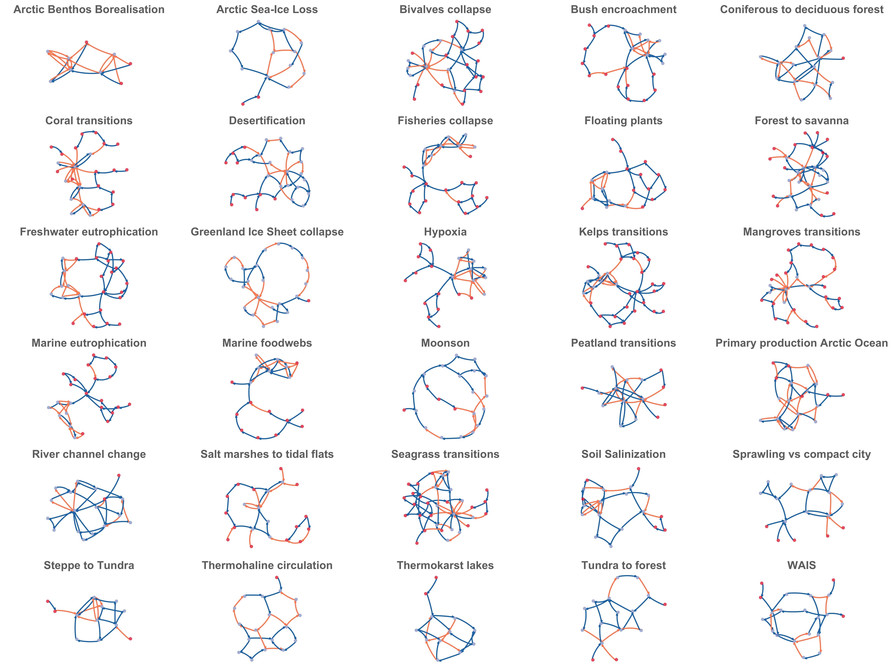
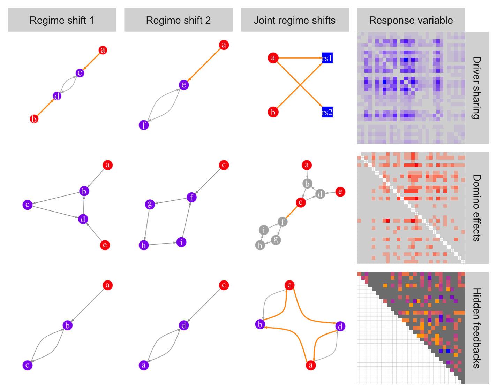
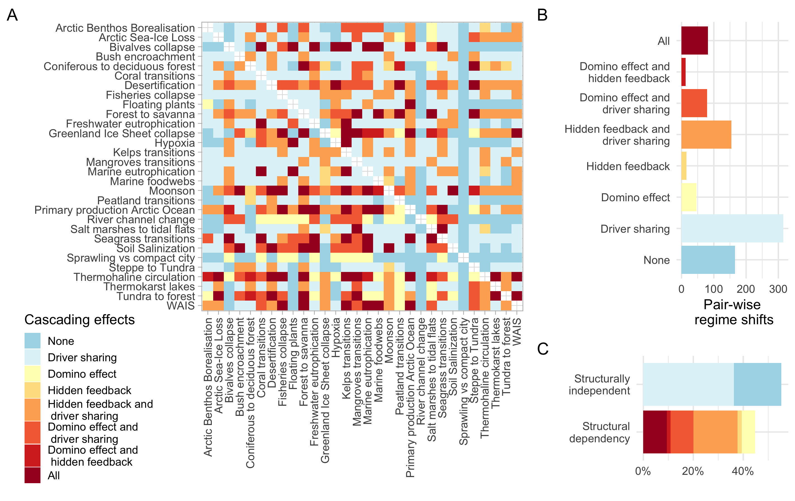
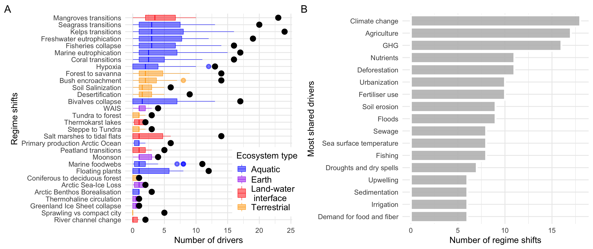
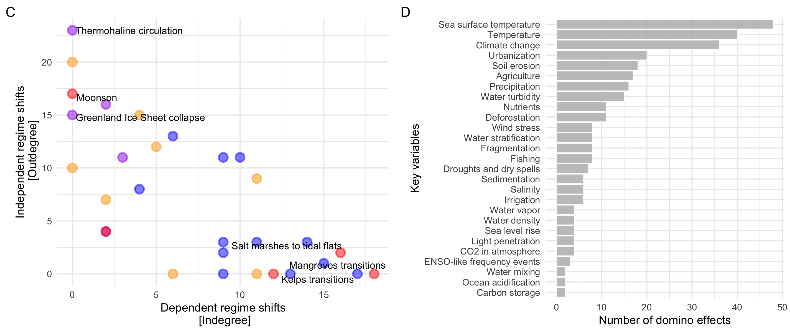
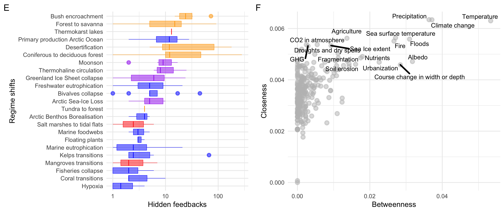
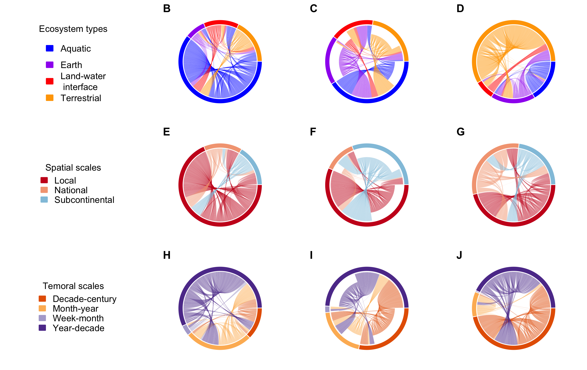
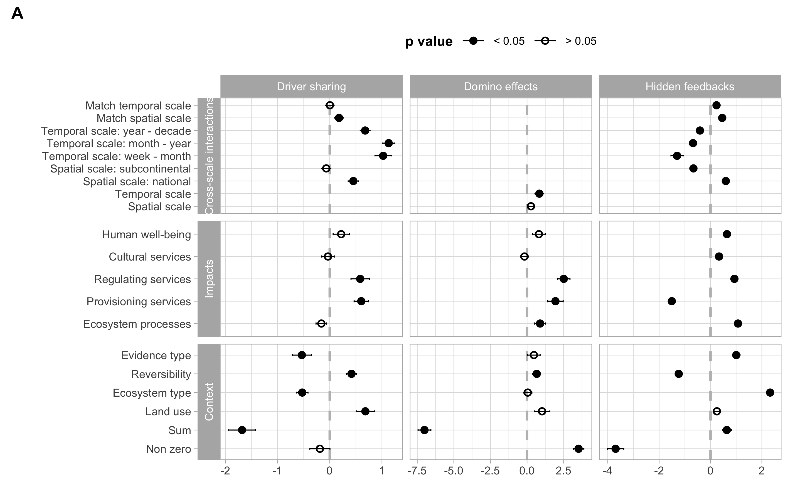
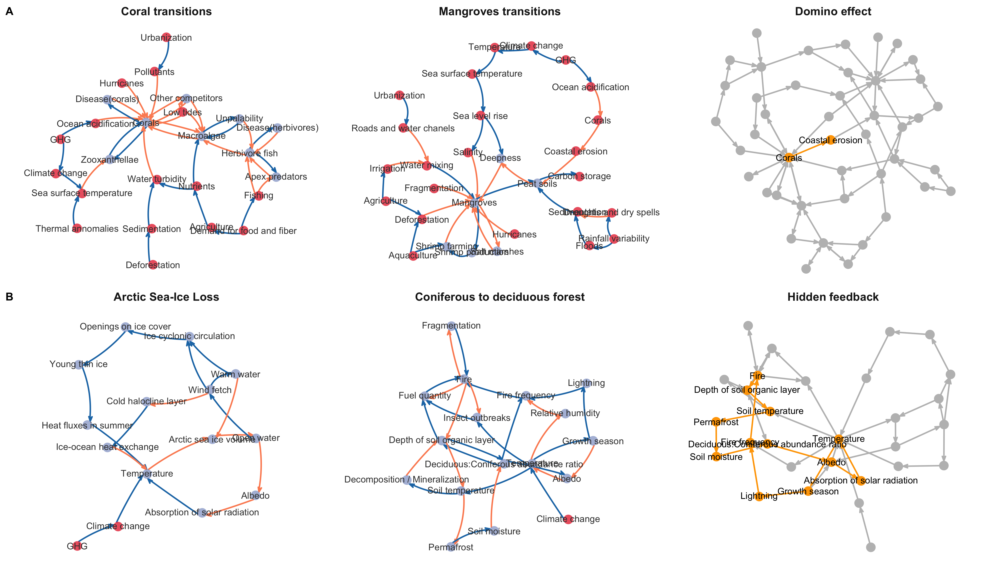

Cascading effects of regime shifts within and across scales
Juan C. Rocha, Garry Peterson, Örjan Bodin & Simon Levin
Bolin Center for Climate Reseach | Stockholm Resilience Centre | Stockholm University
How regime shifts will interact?
Whether the occurrence of one will increase the likelihood of another, or simply correlate at distant places
How regime shifts will interact?
Whether the occurrence of one will increase the likelihood of another, or simply correlate at distant places
Data & method
- Regime shifts database:
- >30 generic regime shifts
- >300 case studies (>1000 papers reviewed)
- Impact ecosystem services.
- Evidence of feedbacks.
- Persists time frame relevant for society.


Hypotheses
Drivers sharing is more context-specific; in this case, regime shifts occurring in similar ecosystem types or land uses will be subject to relatively similar sets of drivers
Domino effects will be mostly dominated by connections from regime shifts that occur at larger spatial scales with slower temporal dynamics to regime shifts that operate at smaller spatial scales with faster temporal dynamics
Hidden feedbacks will occur when scales match (both in space and time), because for a new feedback to emerge they need to be somewhat aligned in the scale at which the process operate

Cascading effects

~45% of the regime shift couplings analyzed present structural dependencies in the form of one-way interactions for the domino effect or two-way interactions for hidden feedbacks
Driver sharing

Aquatic regime shifts tend to have and share more drivers. The most co-occurring drivers are related to food production, climate change and urbanisation. 36% of pair-wise combinations are solely coupled by sharing drivers
Domino effects

Evidence of cross-scale interactions for domino effects was only found in time but not in space. The maximum number of pathways found was 4, and the variables that produce most domino effects relate to climate, nutrients and water transport
Hidden feedbacks

Most hidden feedbacks occur in terrestrial and earth systems. Key variables that belong to many of these hidden feedbacks are related to climate, fires, erosion, the functional role of herbivores, agriculture and urbanisation
Hypotheses
Drivers sharing is more context-specific; in this case, regime shifts occurring in similar ecosystem types or land uses will be subject to relatively similar sets of drivers
Domino effects will be mostly dominated by connections from regime shifts that occur at larger spatial scales with slower temporal dynamics to regime shifts that operate at smaller spatial scales with faster temporal dynamics
Hidden feedbacks will occur when scales match (both in space and time), because for a new feedback to emerge they need to be somewhat aligned in the scale at which the process operate
Cross-scale interactions


Cross-scale interactions
Regime shifts were more likely to share drivers when they occurred in similar land uses, but not necessarily under the same ecosystem types.
One-way directional interactions or domino effects are common but not exclusive to aquatic regime shifts, it highlights the role of water transport and tend to emerge between regime shifts whose dynamics occur at similar temporal scales (but not spatial ones).
Two-way interconnections or hidden feedbacks are more common in terrestrial systems, they occur often between regime shifts that match spatial scales and impact similar ecosystem processes.
Conclusions
- How a regime shift somewhere in the world could affect the occurrence of another regime shift remains an open question and a key frontier of research.
- Developed network-based method that allow us to explore plausible cascading effects and distinguish potential correlations from true interdependencies.
- Regime shifts can be interconnected: they should not be study in isolation assuming they are independent systems. Methods and data collection that takes into account the possibility of cascading effects needs to be further developed.
- The frequency and diversity of regime shifts interconnections suggests that current approaches to environmental management and governance are substantially underestimating the likelihood of cascading effects.
Gracias | Tack
Questions?
email: juan.rocha@su.se
twitter: @juanrocha
slides: juanrocha.se
preprint: doi.org/10.1101/364620
A worked example
